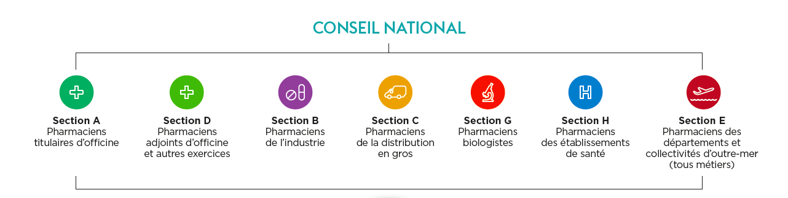

Compétences et Responsabilités du Pharmacie d'Officine
Table of Contents
1. L'Ordre National des Pharmaciens

1.1. Missions
- Garantir le respect des devoirs professionnels
- Protéger l'intégrité et l'indépendance de la profession
- Garantir la compétence des pharmaciens
- Contribuer à promouvoir la santé publique, la qualité des soins notamment la sécurité des actes professionnels.
- S'assurer que l'ensemble des pharmaciens respecte son obligation de développement professionnel continu